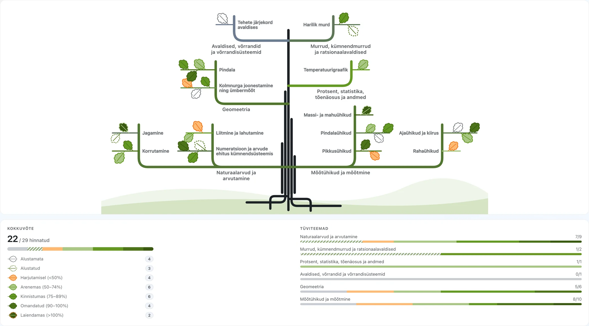

Head tarkusepäeva ja inspireerivat uut kooliaastat!
- 1.–9. klass
- Riiklik õppekava
- Matemaatika
EdUp — Õppekaval põhinev õppe kohandamine ja õpilase personaalne õpitee.
EdUp on Eesti 1.–9. klassi õpilastele mõeldud õppeplatvorm. Õpetajad koostavad, tagasisidestavad ja hindavad tehisintellekti (TI) abiga õpiväljunditel põhinevaid ülesandeid, mis on õpilase oskustele kohandatud. Õpilase oskuste arengu jälgimine.
Õpilase arengu terviklik ülevaade.
Õpetaja ja õpilane näevad, millised oskused on õpilasel omandatud ja millised vajavad veel arendamist. Õpilase areng on nähtav nii klassi õpitulemuste lõikes kui ka üle kooliastme, aidates märgata arengut pikema aja jooksul — esialgu matemaatikas.
Diferentseeritud ülesanded
Õpetaja saab tehisintellekti (TI) abiga luua, tagasisidestada ja hinnata eri raskusastmega ülesandeid, mis lähtuvad õpiväljunditest ning kohanduvad õpilase oskuste, arenguvajaduste ja edenemisega.
Õpipuu — õpilaste teadmiste ja oskuste areng

Kokkuvõte
22 / 29 hinnatud
- Alustamata4
- Alustatud3
- Harjutamisel (<50%)4
- Arenemas (50–74%)6
- Kinnistumas (75–89%)6
- Omandatud (90–100%)4
- Laiendamas (>100%)2
Tüviteemad
-
Naturaalarvud ja arvutamine7/9
-
Murrud, kümnendmurrud ja ratsionaalavaldised1/2
-
Protsent, statistika, tõenäosus ja andmed1/1
-
Avaldised, võrrandid ja võrrandisüsteemid0/1
-
Geomeetria5/6
-
Mõõtühikud ja mõõtmine8/10
Tegu on näidisandmel põhjal loodud õpipuuga
Kuidas EdUp töötab
Lühidalt õpilase ja õpetaja vaates.
Õpilasele
Sinu õpitee.
Pärast uue teemaga tutvumist saad lahendada erineva raskusastmega ülesandeid, mis arvestavad Sinu oskuste ja arenguga.
Saad tagasisidet, mis aitab edasi.
Õpetaja saab tehisintellekti abiga anda Sinu lahendustele sisulist ja teemakohast tagasisidet, et mõistaksid, mis läks hästi ja mida tasub veel harjutada.
Näed oma arengut.
Saad jälgida, millised oskused on Sul juba hästi omandatud ja millele tasub järgmisena rohkem tähelepanu pöörata.
Õpetajale
Lood ja jagad õpilastele ülesandeid.
Sisestad õppeülesande, valid teema ja õpitulemused ning EdUp aitab luua sellest eri raskusastmega versioonid, mis arvestavad õpilaste oskuste, arenguvajaduste ja edenemisega.
Õpilaste vastuste ülevaatus
TI analüüsib vastuseid hindamisvaldkonna ja õpitulemuse põhiselt ja jagab soovitusi.
Annad arengut toetavat tagasisidet.
EdUp aitab koostada sisulise tagasiside, mida saad vajadusel kohandada ja õpilasega jagada. Samal ajal täieneb automaatselt ülevaade õpilase ja klassi arengust.
Korduma kippuvad küsimused
Kellele EdUp on mõeldud?
1.–9. klassi õpilastele, õpetajatele ja koolijuhtidele Eestis. Esialgu matemaatika õpetamiseks ja õppimiseks.
Kuidas tehisintellekt tagasisidet annab?
Õpilase lahendust analüüsib esmalt tehisintellekt ning koostab sellest detailse ülevaate. Õpetaja saab analüüsi tulemit kasutada hindamiseks, vajadusel seda kohandades ning seejärel õpilasega jagades.
Kas hinded pannakse automaatselt?
Ei. Tehisintellekti hinne on alati detailne, kuid soovituslik — tulemus muutub õpilasele nähtavaks ainult pärast õpetaja ülevaatust ja kohandamist.
Kas EdUp lähtub Eesti õppekavast?
Jah, ülesanded ja õpiväljundid on seotud riikliku õppekavaga.
Kuidas kool EdUpiga liituda saab?
Võta ühendust allpool toodud kontaktide kaudu, et arutada oma kooli liitumist.